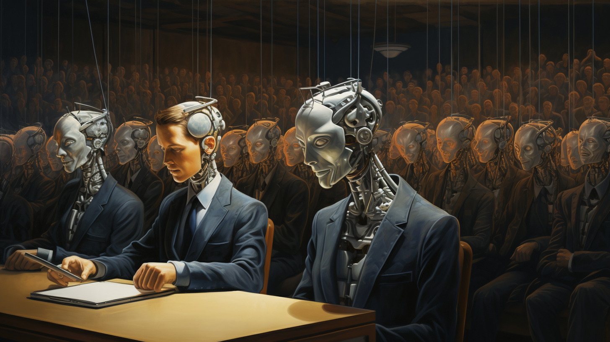

Studying Philosophy at a Time of Automated Thinking
Notes to the philosophy student
Why study philosophy? A first answer would be: because we want to learn to think rigorously, which is a thinking that goes to the foundations of things. It is not merely about acquiring information for a specific field of application in a particular segment of society (‘education’). Philosophy starts by questioning what the other sciences presuppose, the assumptions of all activity, cognition, and knowledge as a whole. One can put it in loftier terms thus: philosophy is the thinking of thinking and the unity of thinking and being. It does this methodically. But what exactly is the point of it?

Instead of the purpose of this activity lying in an overarching goal, doing philosophy is itself already the presence of the highest goal: that reason enlighten itself more profoundly and grasp itself in its actuality. The goal of philosophy is not to entrench oneself in an ivory tower, it is to ‘grasp our own time in thought’ (G.W.F. Hegel), i.e. to arrive in thought at ourselves and our actuality without ideological shortcuts and illusions.
We seek to comprehend what constitutes a human relation to ourselves and to the world, one that is determined by reason in the pursuit of knowledge and in action. We seek to comprehend what nature is and how reason presents itself in nature. Ultimately, we want to cognise reason in and for itself and to comprehend the logical forms and principles. In this, it turns out that everything is related to everything else. The pathway upwards to the principles, to the universal, is simultaneously the path downward to the individuals, into actuality. Because everything is related to everything else and everything is mediated by everything else, philosophy as it seeks to reveal all this is a system. This is why one cannot isolate individual ‘disciplines’ of philosophy and say e.g., I am an ethicist and epistemology is not my concern. Because philosophy is a system as in an organism, the ‘whole’ is present in every part, present in each ‘discipline’ under a specific aspect. Do you have a definite concept of action? Then you also have, implicitly at least, a definite concept of science.
So how does one learn this rigorous, systematic thinking? Clearly, central to the study of philosophy is gathering as broad a range as possible of (historical) knowledge of terminology, concepts, arguments and intellectual positions. It is possible, of course, to have acquired an encyclopaedic knowledge and to be able to say precisely which argument stands in which paragraph and which page in a philosopher’s work, to be able to recite the ten categories of Aristotle or the twelve categories of Kant, and yet this is still not doing philosophy.
What is lacking?
To do philosophy requires right from the outset that information is not simply obtained externally and then reproduced. Vital to the whole process is comprehension of the fact that there is an issue (Sache) revealing itself in these forms of thought and arguments, in definite ways, on a specific level of reflection. This level of reflection in the subject matter can only be acquired by the practice of autonomous thinking. Comprehension must be accomplished by oneself – for we do not simply possess specific concepts. For Hegel, man is the existing concept.
Comprehending is like pulling together an initially loose manifold of threads in their own context, finding the inner unity of a ‘fabric’. Sooner or later comes the illuminating insight, the ‘eureka’ moment binding the clues, the threads together even for the most difficult problems. Reason – the ancient Greeks spoke of logos – is ‘revealed’: it cannot hide forever but opens itself up in different places and goes on to illuminate more frequently recurring and ever more extensive relations. Thinking is an activity that illuminates itself, one that requires persistence and strictly principled consistency. No one can relieve us of the effort of thinking, of comprehending – no teacher and certainly no machine. Thinking has to be learnt – it cannot be outsourced, it is not to be replaced by an automated linking of signs. We live in a time of ‘automated thinking’ as impressively described by the Frankfurt philosopher Bruno Liebrucks.1
Here a word on the use of so-called ‘artificial intelligence’ (AI) is in order. In contrast perhaps to other fields of life and research, for us in philosophy, AI does not offer helpful tools we are always eager to make use of. Being comfortably and effortlessly led in study and research by algorithms, finding orientation in a subject simply by pressing a button, these are not favourable prospects where we are concerned with the thinking of thinking.
The use of AI rests upon the illusion of easy availability in matters of philosophy. This illusion is the greatest obstacle to acquiring an education of one’s own. Whoever wishes to avoid the struggle with the matter, including the experience of failure (!), of not understanding, whoever does not struggle with the resistance of what initially appears to be a completely opaque text or form of thought in order to draw out their own insights, deprive themselves of the possibility of genuine insight and new knowledge.
Note the physical example: only against constantly increasing resistance can one preserve the body’s own physical powers – without gravity, the musculature quickly degenerates. Someone’s skill in executing physical tasks can be measured by the magnitude of the resistance they can overcome. The same is true in intellectual tasks of the mind. Do not shy away from working on ‘difficult’ texts. The belief that it is possible to delegate the struggle of comprehension to AI leads us into a double dependency: first, on the ‘synthesis’ of signs according to probability by the algorithms and, second, on the data material that is currently available ‘on the net’. Such dependencies amount to the direct opposite of critical thinking, which knows on which sources it relies and exactly why and how it does so. The alternative would be the ultimate dogmatism. To use AI meaningfully – e.g. as translation support – one must oneself always be ‘better’ than the AI package, i.e. capable of assessing and evaluating the quality of the combinations in the material delivered. However this too must itself be learned.
In apparently enlightened times the byword of the Enlightenment according to Immanuel Kant must be insisted upon more than ever: ‘Have the courage to use your own understanding!’ It appears that we lack considerably the energy and resilience for autonomous, self-motivated thinking that reflects upon its foundations and prerequisites. In philosophy thinking should liberate itself; it should become an independent, self-grounding thinking – founded only on the authority of reason which exists in every person in individuo. Therefore we must recoil from the fatal attitude of being led by someone else’s hand through our own cultural history as if we were its consumers.
Learning philosophy unavoidably requires the ‘sour labour of the concept’ (G.W.F. Hegel). This consists of serious labour in the course of the years to work through and acquire the objective culture of systematic thinking that has been achieved in the history of philosophy. Working through the literature is not to be accomplished with an armchair consumer attitude or in bits and pieces between stops on the bus. We only learn a foreign language by active speaking, not by sampling or streaming.
You will see that philosophical texts are initially opaque, incomprehensible, silent. Sentences are read whose meaning is not understood. The words themselves are not understood let alone what the point of it all is. There seems to be nothing but signs without meaning. But wait: these texts are objective spirit. The spirit lies in them as in a sarcophagus (Werner Schmitt). That spirit must first awaken to new life by the one who reads it (Wilhelm v. Humboldt). But being able to bring the signs back to life requires a receptivity, a resonance space. I can only receive the meaning from the text being read, which I am capable of producing and reviving in myself. I must therefore know, for instance, what question the text seeks to answer. The more we occupy ourselves with the matter, the more concrete our concept (which as ‘I’ we ourselves are) becomes and the more meaningful the texts become, even up to the point where we can literally enter into a dialogue with the text. Then we notice that the great texts reveal ever more new meaning because our resonance space has deepened.
How can we deepen our ‘resonance space’? The maxim is: read as many of the great primary texts of the philosophical tradition as possible – where ‘read’ means: study, meditate, excerpt, and read again. Erich Heintel, a major Viennese philosopher of the 20th century, would always emphasise this: ‘The best secondary literature is found in reading the primary text over again.’

Source: Midjourney.
Still, the question remains urgent: where on earth should one begin? It is indeed hard to see the forest for the trees. It is hard to know which are the great, important, influential texts and to distinguish between the great systems and what plays only a supporting role.
However, even in thinking there is no need to reinvent the wheel. There is indeed development and progress in the systems of philosophy. Not everything is of the same weight when it comes to gaining insight into reason and its actuality.
It is best to begin where the European tradition of philosophy began to move on from myth (storytelling speech) to logos (self-justifying speech), namely with the Greeks. Plato and Aristotle are the first great systematisers who, in principle, already reflected on all the questions and problems. One can take up a variety of perspectives on the history of the development of thought. According to my understanding of it, the next great step would be Kant and transcendental philosophy (the Critiques of Reason).
Kant is the first after Plato who accomplished a ‘revolution in thinking’ (B. Liebrucks). Once the necessity of the Kantian standpoint has been grasped, then it will also become clear that the next task is to go with Kant beyond Kant. This opens up the possibility of a ‘second revolution in thinking’, which is what Hegel did. It is not possible to begin with Hegel. Indeed without Kant, there is no pathway to understanding Hegel. By working through these revolutions in thinking, we are ourselves enabled to think effectively and systematically, to penetrate the problems of our time and to find answers determined by reason for these problems. Only in this acquisition, only by working through the philosophical traditions, does it become possible to at some point get over them (B. Liebrucks). Whoever thinks they can re-invent the wheel in philosophy, to discover new principles may well end up rekindling insights of the Presocratics.
Studying too has to be learned and conducted with a specific method.
Autonomous thinking begins in the university, in the lecture hall. The schools hardly prepare the students for this. University study is not a training in the forms and procedures for presenting material. In philosophy, so-called ‘bulimic cramming’ – stuffing short-term memory immediately before an examination with the material, and then after presenting it in the exam forgetting it again just as quickly – is especially meaningless. It must be emphasised how important it is for the acquisition of knowledge to use the old, tried and true technique in education of taking notes. Nowadays the view is ever more widespread that this can be dispensed with by resorting to technology and media, which again evoke the semblance of easy availability (why take notes when the PowerPoint slides can be downloaded, or a photo can be taken with the smartphone?).
But then, why is taking notes so important, even though, but in fact precisely because (and not just at first), it takes effort? Because in that already an elementary acquisition activity is being exercised. For every sentence I hear, I also have to think with the speaker and immediately differentiate: is this something essential that must be noted or can I leave it out? This distinction of the essential from the inessential is itself an activity of comprehension. This must be exercised.
At first, the student may be unsure how to distinguish and seek to write down almost everything (which is what should be avoided by using a specific technique). But the better one gets, the more one knows and has acquired – and this happens only through the performance of this vital educational technique of taking notes – and the easier distinguishing becomes, and the more precise, structured and concentrated the notes become. Autonomous thinking is not advanced through memorising scripts and PowerPoint slides by heart.
Now on the subject of engagement with sources and secondary literature, the visit to the special libraries is highly recommended. A word of warning against the illusion of easy accessibility on the net: the student must beware of making themselves dependent on what is currently by chance available online by the grace of the algorithms. Of course, a great deal is available in e-book format, but beyond that, there is a vast amount on the net that is unusable, things that anyone can post there. Whoever has tried to publish a book with a good publisher or an article in a specialist journal knows the hurdles that have to be overcome to reach that goal.
Source: Midjourney.
Another important point is that the literature in philosophy does not ‘get old’, as happens in the special sciences with their ‘research fronts’. It often happens that older works are more rigorous, deeply thought through and comprehensive than the newer ones. I would especially recommend the series of monographs on modern philosophers by Kuno Fischer published at the end of the nineteenth century. Anyone who wants to get to know the method – the Greek word méthodos means path or course of investigation – of academic study, also in relation to the other classical disciplines of university study, in greater detail, would do well to read F.W.J. Schelling’s Lectures on the Method of Academic Study.
It must also be said that the endurance required in this engagement goes far beyond the time of study at the university. At any rate, a course of study at the university can, if it is well organised, not do much more than lay the foundations for further private study. One often hears it said that as a rule, it takes ten years (on the basis of regular exercise) until one arrives at the stage where one can think systematically for oneself, where it is possible to move confidently within a system. The gain from this effort is not inconsiderable: it is an experience of freedom in thinking, consisting of the concept encountering itself in its world.
Aristotle – an encyclopaedic thinker with hardly any parallel – taught that the greatest happiness was to be found not in a life of pleasure and that it would not be found to be lasting in political life; the greatest happiness he believed was only to be found in science itself, in theoría. For Aristotle, it is in the actual performance of cognition of the relations of actual reality that we are, at least for a few fulfilled moments, united with the gods.
◊ ◊ ◊

Max Gottschlich on Daily Philosophy:
-
Bruno Liebrucks, ‘Das nichtautomatisierte Denken’, in Philosophie in Selbstdarstellungen, vol. II, ed. L .J. Pongratz, Hamburg 1975, pp. 170-223. ↩︎